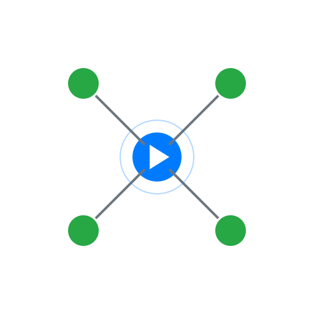

Welcome to the IoT Debugger
Use the IoT Debugger to view and explore ThingSpeak channel data and Adafruit IO feed data from their APIs. Contribute to the project on GitHub.
Use the IoT Debugger to view and explore ThingSpeak channel data and Adafruit IO feed data from their APIs. Contribute to the project on GitHub.